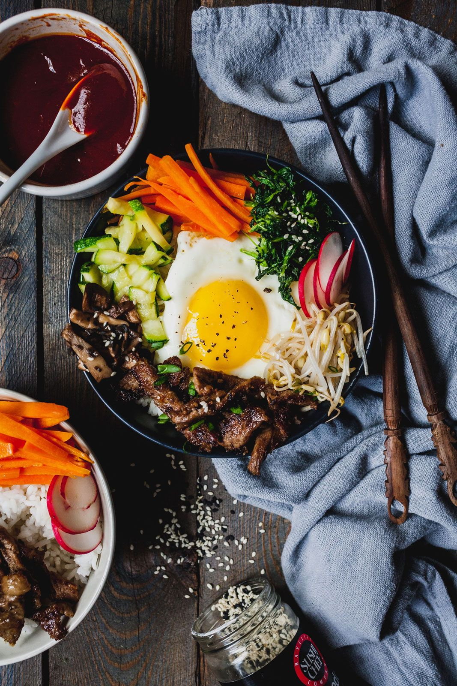
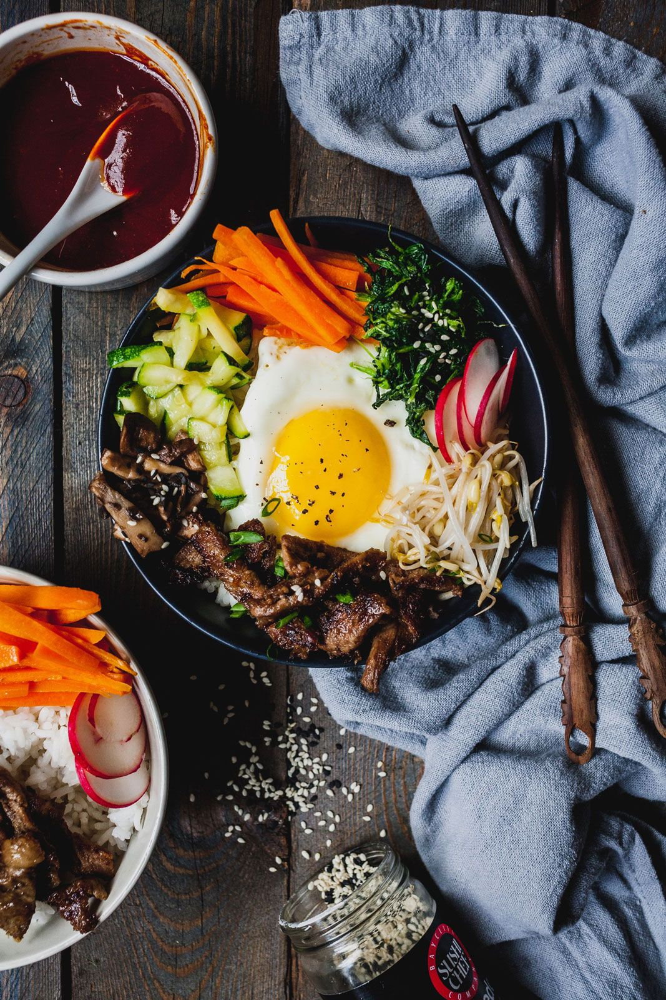

La colazione in Europa, in Asia e in Africa


La colazione europea
Alcuni stati europei, come l'Italia e l'Olanda, prediligono una colazione dolce, tra caffè e brioche e gli stroop olandesi. Altri, come la Gran Bretagna o la Polonia, preferiscono una colazione salata, composta in entrambi i casi da salsicce e uova.
La colazione asiatica
La colazione asiatica è simile al pranzo e alla cena; troviamo infatti il kimchi in Corea, tofu in Giappone e in India - accompagnato qui da patate, lenticchie e salsicce vegetariane - pesce e porridge rispettivamente in Tailandia e Vietnam.

La colazione africana
Anche la colazione africana si divide tra dolce e salata: in Marocco, ad esempio, si consumano Baghrir con marmellata e burro, mentre in Egitto vi è il Foul Madamas, un piatto composto da fave e ceci condito con olio d'oliva, la tipica salsa tahini, uova bollite e verdura verde.

 
